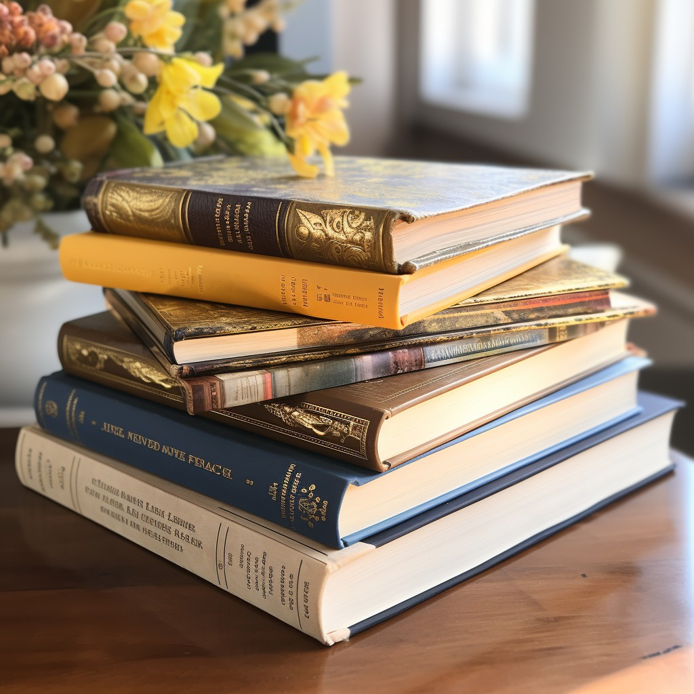

Hola! Mi nombre es Julieta Zambrano Cortázar, Soy de Bogota Colombia y tengo 14 años. Estudio en el colegio Reuven Feuerstein y estoy en grado 8. Hablando de mi apariencia física, mido 1,64, tengo pelo negro y ondulado, utilizo gafas y brackets. De mis cosas favoritas está el pasar tiempo con mi familia y mi mascota, salir a correr y se me dá muy bien ser lider.
Hobbies
Pintar con acuarela
Leer
Correr